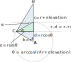

Astral v2¶


Astral is a python module for calculating the times of various aspects of the sun and moon.
It can calculate the following
- Dawn
The time in the morning when the sun is a specific number of degrees below the horizon.
- Sunrise
The time in the morning when the top of the sun breaks the horizon (asuming a location with no obscuring features.)
- Solar Noon
The time when the sun is at its highest point.
- Solar Midnight
The time when the sun is at its lowest point.
- Sunset
The time in the evening when the sun is about to disappear below the horizon (asuming a location with no obscuring features.)
- Dusk
The time in the evening when the sun is a specific number of degrees below the horizon.
- Daylight
The time when the sun is up i.e. between sunrise and sunset
- Night
The time between astronomical dusk of one day and astronomical dawn of the next
- Twilight
The time between dawn and sunrise or between sunset and dusk
- The Golden Hour
The time when the sun is between 4 degrees below the horizon and 6 degrees above.
- The Blue Hour
The time when the sun is between 6 and 4 degrees below the horizon.
- Time At Elevation
the time when the sun is at a specific elevation for either a rising or a setting sun.
- Solar Azimuth
The number of degrees clockwise from North at which the sun can be seen
- Solar Elevation / Altitude
The number of degrees up from the horizon at which the sun can be seen
- Rahukaalam
“Rahukaalam or the period of Rahu is a certain amount of time every day that is considered inauspicious for any new venture according to Indian Vedic astrology”.
- Moon Phase
Calculates the phase of the moon for a specified date.
Astral also comes with a geocoder containing a local database that allows you to look up information for a set of locations (new locations can be added).
Note
The Google Geocoder has been removed. Instead you can use the Google Client for Google Maps Services https://github.com/googlemaps/google-maps-services-python
Examples¶
The following examples demonstrate the functionality available in the module
Sun¶
>>> from astral import LocationInfo
>>> import datetime
>>> city = LocationInfo("London", "England", "Europe/London", 51.5, -0.116, 24)
>>> print(f'Information for {city.name}/{city.region}\n')
Information for London/England
>>> timezone = city.timezone
>>> print(f'Timezone: {timezone}\n')
Timezone: Europe/London
>>> print('Latitude: %.02f; Longitude: %.02f\n' % \
>>> (city.latitude, city.longitude))
Latitude: 51.50; Longitude: -0.12
>>> from astral.sun.local import sun
>>> s = sun(city, date=datetime.date(2009, 4, 22))
>>> print(f'Dawn: {sun['dawn']}')
>>> print(f'Sunrise: {sun['sunrise']}')
>>> print(f'Noon: {sun['noon']}')
>>> print(f'Sunset: {sun['sunset']}')
>>> print(f'Dusk: {sun['dusk']}')
Dawn: 2009-04-22 05:12:56+01:00
Sunrise: 2009-04-22 05:49:36+01:00
Noon: 2009-04-22 12:58:48+01:00
Sunset: 2009-04-22 20:09:07+01:00
Dusk: 2009-04-22 20:45:52+01:00
Moon¶
>>> import datetime
>>> from astral.moon import phase
>>> moon_phase = phase(date=datetime.date(2018, 1, 1))
>>> print(moon_phase)
13
>>> moon_phase = phase(datetime.date(2018, 1, 1), float)
13.255666666666668
The moon phase method returns an number describing the phase, where the value is between 0 and 27 (27.99 if you pass float as the return type). The following lists the mapping of various vales to the description of the phase of the moon.
0 = New Moon7 = First Quarter14 = Full Moon21 = Last Quarter
If for example the number returned was 27(.99) then the moon would be almost at the New Moon phase, and if it was 24 it would be half way between the Last Quarter and a New Moon.
The return value can be cast to either an int (the default) or a float by passing the
type required as the rtype parameter to phase()
Note
The moon phase does not depend on your location. However what the moon actually looks like to you does depend on your location. If you’re in the southern hemisphere it looks different than if you were in the northern hemisphere.
See http://moongazer.x10.mx/website/astronomy/moon-phases/ for an example.
For an example of using this library to generate moon phases including the names in various languages and the correct Unicode glyphs see the project by PanderMusubi on Github.
Geocoder¶
>>> from astral.geocoder import lookup
>>> lookup("London")
LocationInfo(name='London', region='UK', latitude=51.5073509, longitude=-0.1277583,
timezone='UTC', elevation=7)
Additional Locations¶
You can add to the list of available locations
using the add_locations() function and passing either a string with one
line per location or by passing a list containing strings, lists or tuples (lists and tuples are
passed directly to the LocationInfo constructor).
Custom Location¶
If you only need a single location that is not in the geocoder then you can
construct a LocationInfo and fill in the values, either with a
tuple on initialization
from astral.sun.utc import sun
l = LocationInfo('name', 'region', 'timezone/name', 0.1, 1.2, 0)
sun(observer=l)
or set the attributes after initialization:
from astral import LocationInfo
l = LocationInfo()
l.name = 'name'
l.region = 'region'
l.timezone = 'US/Central'
l.latitude = 0.1
l.longitude = 1.2
l.elevation = 0
Note
name and region can be anything you like.
Timezone Groups¶
Timezone groups such as Europe can be accessed via the group() function in the
geocoder module
>>> from astral import geocoder
>>> europe = geocoder.group('europe').locations
>>> europe.sort()
>>> europe
['Aberdeen', 'Amsterdam', 'Andorra la Vella', 'Ankara', 'Athens', ...]
Effect of Elevation¶
An attempt has been made to allow for the effect of elevation on the times for the sun. Higher elevations cause the sun to rise earlier and to set later for the observer.
This is performed by calculating the angle α in the image below and adding this to the depression angle for the sun calculations.
Warning
This may not be the correct calculation for the angle. Please raise an issue if you know how it should be calculated.
Note on Localized Timezones¶
When creating a datetime object in a specific timezone do not use the
tzinfo parameter to the datetime constructor. Instead use the
localize() method provided by pytz on the correct pytz timezone:
dt = datetime.datetime(2015, 1, 1, 9, 0, 0)
dt = pytz.timezone('Europe/London').localize(dt)
Dependencies¶
Astral has one required external Python dependency on pytz.
Cities¶
The module includes location and time zone data for the following cities. The list includes all capital cities plus some from the UK. The list also includes the US state capitals and some other US cities.
Aberdeen, Abu Dhabi, Abu Dhabi, Abuja, Accra, Addis Ababa, Adelaide, Al Jubail, Albany, Albuquerque, Algiers, Amman, Amsterdam, Anchorage, Andorra la Vella, Ankara, Annapolis, Antananarivo, Apia, Ashgabat, Asmara, Astana, Asuncion, Athens, Atlanta, Augusta, Austin, Avarua, Baghdad, Baku, Baltimore, Bamako, Bandar Seri Begawan, Bangkok, Bangui, Banjul, Barrow-In-Furness, Basse-Terre, Basseterre, Baton Rouge, Beijing, Beirut, Belfast, Belgrade, Belmopan, Berlin, Bern, Billings, Birmingham, Birmingham, Bishkek, Bismarck, Bissau, Bloemfontein, Bogota, Boise, Bolton, Boston, Bradford, Brasilia, Bratislava, Brazzaville, Bridgeport, Bridgetown, Brisbane, Bristol, Brussels, Bucharest, Bucuresti, Budapest, Buenos Aires, Buffalo, Bujumbura, Burlington, Cairo, Canberra, Cape Town, Caracas, Cardiff, Carson City, Castries, Cayenne, Charleston, Charlotte, Charlotte Amalie, Cheyenne, Chicago, Chisinau, Cleveland, Columbia, Columbus, Conakry, Concord, Copenhagen, Cotonou, Crawley, Dakar, Dallas, Damascus, Dammam, Denver, Des Moines, Detroit, Dhaka, Dili, Djibouti, Dodoma, Doha, Douglas, Dover, Dublin, Dushanbe, Edinburgh, El Aaiun, Fargo, Fort-de-France, Frankfort, Freetown, Funafuti, Gaborone, George Town, Georgetown, Gibraltar, Glasgow, Greenwich, Guatemala, Hanoi, Harare, Harrisburg, Hartford, Havana, Helena, Helsinki, Hobart, Hong Kong, Honiara, Honolulu, Houston, Indianapolis, Islamabad, Jackson, Jacksonville, Jakarta, Jefferson City, Jerusalem, Juba, Jubail, Juneau, Kabul, Kampala, Kansas City, Kathmandu, Khartoum, Kiev, Kigali, Kingston, Kingston, Kingstown, Kinshasa, Koror, Kuala Lumpur, Kuwait, La Paz, Lansing, Las Vegas, Leeds, Leicester, Libreville, Lilongwe, Lima, Lincoln, Lisbon, Little Rock, Liverpool, Ljubljana, Lome, London, Los Angeles, Louisville, Luanda, Lusaka, Luxembourg, Macau, Madinah, Madison, Madrid, Majuro, Makkah, Malabo, Male, Mamoudzou, Managua, Manama, Manchester, Manchester, Manila, Maputo, Maseru, Masqat, Mbabane, Mecca, Medina, Memphis, Mexico, Miami, Milwaukee, Minneapolis, Minsk, Mogadishu, Monaco, Monrovia, Montevideo, Montgomery, Montpelier, Moroni, Moscow, Moskva, Mumbai, Muscat, N’Djamena, Nairobi, Nashville, Nassau, Naypyidaw, New Delhi, New Orleans, New York, Newark, Newcastle, Newcastle Upon Tyne, Ngerulmud, Niamey, Nicosia, Norwich, Nouakchott, Noumea, Nuku’alofa, Nuuk, Oklahoma City, Olympia, Omaha, Oranjestad, Orlando, Oslo, Ottawa, Ouagadougou, Oxford, P’yongyang, Pago Pago, Palikir, Panama, Papeete, Paramaribo, Paris, Perth, Philadelphia, Phnom Penh, Phoenix, Pierre, Plymouth, Podgorica, Port Louis, Port Moresby, Port of Spain, Port-Vila, Port-au-Prince, Portland, Portland, Porto-Novo, Portsmouth, Prague, Praia, Pretoria, Pristina, Providence, Quito, Rabat, Raleigh, Reading, Reykjavik, Richmond, Riga, Riyadh, Road Town, Rome, Roseau, Sacramento, Saint Helier, Saint Paul, Saint Pierre, Saipan, Salem, Salt Lake City, San Diego, San Francisco, San Jose, San Juan, San Marino, San Salvador, Sana, Sana’a, Santa Fe, Santiago, Santo Domingo, Sao Tome, Sarajevo, Seattle, Seoul, Sheffield, Singapore, Sioux Falls, Skopje, Sofia, Southampton, Springfield, Sri Jayawardenapura Kotte, St. George’s, St. John’s, St. Peter Port, Stanley, Stockholm, Sucre, Suva, Swansea, Swindon, Sydney, T’bilisi, Taipei, Tallahassee, Tallinn, Tarawa, Tashkent, Tbilisi, Tegucigalpa, Tehran, Thimphu, Tirana, Tirane, Tokyo, Toledo, Topeka, Torshavn, Trenton, Tripoli, Tunis, Ulaanbaatar, Ulan Bator, Vaduz, Valletta, Vienna, Vientiane, Vilnius, Virginia Beach, W. Indies, Warsaw, Washington DC, Wellington, Wichita, Willemstad, Wilmington, Windhoek, Wolverhampton, Yamoussoukro, Yangon, Yaounde, Yaren, Yerevan, Zagreb
US Cities¶
Albany, Albuquerque, Anchorage, Annapolis, Atlanta, Augusta, Austin, Baltimore, Baton Rouge, Billings, Birmingham, Bismarck, Boise, Boston, Bridgeport, Buffalo, Burlington, Carson City, Charleston, Charlotte, Cheyenne, Chicago, Cleveland, Columbia, Columbus, Concord, Dallas, Denver, Des Moines, Detroit, Dover, Fargo, Frankfort, Harrisburg, Hartford, Helena, Honolulu, Houston, Indianapolis, Jackson, Jacksonville, Jefferson City, Juneau, Kansas City, Lansing, Las Vegas, Lincoln, Little Rock, Los Angeles, Louisville, Madison, Manchester, Memphis, Miami, Milwaukee, Minneapolis, Montgomery, Montpelier, Nashville, New Orleans, New York, Newark, Oklahoma City, Olympia, Omaha, Orlando, Philadelphia, Phoenix, Pierre, Portland, Portland, Providence, Raleigh, Richmond, Sacramento, Saint Paul, Salem, Salt Lake City, San Diego, San Francisco, Santa Fe, Seattle, Sioux Falls, Springfield, Tallahassee, Toledo, Topeka, Trenton, Virginia Beach, Wichita, Wilmington
Thanks¶
The sun calculations in this module were adapted, for Python, from the spreadsheets on the following page.
The moon phase calculation is based on some javascript code from Sky and Telescope magazine
Moon-phase calculationRoger W. Sinnott, Sky & Telescope, June 16, 2006.
Also to Sphinx for making doc generation an easy thing (not that the writing of the docs is any easier.)
Contact¶
Simon Kennedy <sffjunkie+code@gmail.com>
Version History¶
Version |
Description |
|---|---|
2.0.0 |
|
1.10.1 |
Keyword args are now passed to the geocoder class from Astral __init__ in order to allow the Google Maps API key to be passed to the GoogleGeocoder. |
1.10 |
Added support to AstralGeocoder to add additional locations to the database. |
1.9.2 |
1.9 broke the sun_utc method. Sun UTC calculation passed incorrect parameter to more specific methods e.g. sunrise, sunset etc. |
1.9.1 |
Correct version number in astral.py |
1.9 |
Now takes elevation into account. |
1.8 |
|
1.7.1 |
|
1.7 |
|
1.6.1 |
|
1.6 |
|
1.5 |
|
1.4.1 |
|
1.4 |
|
1.3.4 |
|
1.3.3 |
|
1.3.2 |
|
1.3.1 |
|
1.3 |
|
1.2 |
|
1.1 |
|
1.0 |
|
0.9 |
|
0.8.2 |
|
0.8.1 |
|
0.8 |
Fix for bug 1407773: Moon phase calculation changed to remove time zone parameter (tz) as it is not required for the calculation. |
0.7.5 |
Fix for bug 1402103: Buenos Aires incorrect timezone |
0.7.4 |
Added Canadian cities from Yip Shing Ho |
0.7.3 |
Fix for bug 1239387 submitted by Torbjörn Lönnemark |
0.7.2 |
Minor bug fix in |
0.7.1 |
Bug fix. Missed a vital return statement in the
|
0.7 |
|
0.6.2 |
Added various cities to database as per https://bugs.launchpad.net/astral/+bug/1040936 |
0.6.1 |
|
0.6 |
|
0.5 |
|
0.4 |
|
0.3 |
|
0.2 |
Fix for bug 554041 submitted by Derek_ / John Dimatos |
0.1 |
First release |